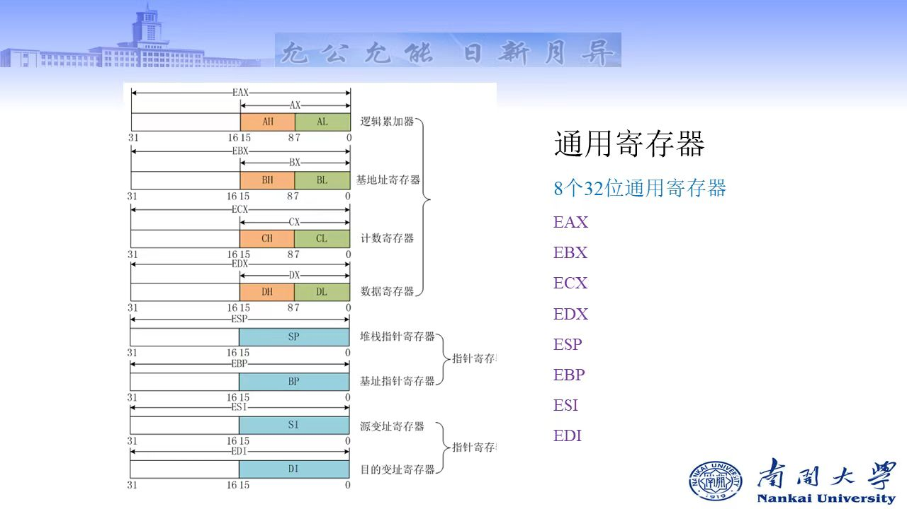

汇编语言与逆向工程的基础¶
汇编语言的前置知识点汇总，参考书籍《Intel汇编语言程序设计》 (*)标注的模块是往年没有的（指2023及以前），可以多加关注 本章知识点强调：
- 计算机体系结构：寄存器
- IA 32位处理器体系结构：保护模式、EFLAGS寄存器
- IA 32的内存管理：段模式，页模式
Part00 汇编语言认知¶
什么是汇编语言¶
计算机编程语言包括：汇编语言、机器语言、高级语言
汇编语言称为符号语言，用助记符代替机器指令的操作码，用地址符号或标号代替指令或操作数的地址
汇编语言的优缺点¶
- 优点：高速度、高效率，能够深刻地对软件程序进行分析
- 缺点： （1）学习难度高：需要了解系统和硬件的知识 （2）可移植性差：不同CPU架构、指令集存在差异 （3）复杂：程序较长、结构松散
汇编语言应用场景¶
嵌入式系统、实时系统、游戏机、驱动程序、加密算法、逆向分析
汇编语言之于虚拟机（*）¶
- 第五层：高级语言
- 第四层：汇编语言：助记符
- 第三层：操作系统：定义交互命令的虚拟机
- 第二层：指令集体性结构：固化在处理器上的内部的指令集
- 第一层：微结构：芯片上特殊的微指令结构
- 第零层：数字逻辑
程序执行层次：
- 翻译方式：高层虚拟机的程序被整体翻译成底层的虚拟机程序，然后在底层虚拟机上执行
- 解释方式：低层虚拟机对高层虚拟机程序，逐条指令进行解码并执行
汇编语言中数据的表示、存储方式¶
二进制数：
- 最左边的位称为最高有效位(MSB)
- 最右边的位称为最低有效位(LSB)
!!! Note "常用存储单位思辨: + 字节（Byte） 包含8个bit位 + 字（word） 包含2个字节 + 双字（doubleword） 包含2个字 + 八字节 （quadword）包含2个双字
$$1kB = 1024byte,1MB = 1024kB$$ $$1GB = 1024MB,1TB = 1024GB,1PB = 1024TB$$
字节序
表示数据在存储器中的存放顺序
- 大端字节序：一般意义上的顺序存储（最高位存储在低地址）
- 小端字节序：一般意义上的逆序存储
Windows使用的是小端字节序
Part01 计算机体系结构¶
CPU¶
- 寄存器：数据存储，数量有限
- 时钟：同步CPU内部操作 每个时钟周期CPU完成一步操作，时钟频率 = 1/时钟周期。
- 控制单元CU：控制机器指令的执行步骤
- 算术逻辑单元ALU：算数运算、逻辑运算
在CPU中执行单条机器指令的执行包括一系列操作
- 取指令
- 解码：控制单元CU确定执行什么操作
- 取操作数：从内存中读操作数
- 执行：ALU中执行
- 存储输出操作数：向内存中写入
内存存储单元MSU¶
存放指令和数据的地方
PART02 IA-32处理器¶
工作模式¶
- 实地址模式：16位，8086程序设计环境
系统刚启动时一般是实地址模式，从段寄存器直接拿取起始地址。 此时，物理地址是20位的，因为有20条地址线，可存储空间1MB。
16位寄存器如何兼容?此时，机器使用一个段选择器（通常是一个段寄存器）和一个偏移地址相结合产生一个20位的物理地址。
- 保护模式：32位、IA-32程序设计环境
32位的寻找地址的上限是有4GB的地址空间。同时是一个多任务的操作系统。同时也提供了虚拟8086模式，兼容旧的8086程序。
处理器寄存器结构¶
+-------------------------+
| 段寄存器 (CS, DS, ...) |
+-------------------------+
| 通用寄存器 (EAX, EBX, ...) |
+-------------------------+
| 特殊寄存器 (PC, IR, Flags) |
+-------------------------+
段寄存器¶
通常在寄存器组的一部分，数量有限，位置固定。它们主要用于存储段的基地址，帮助CPU计算物理地址
- CS：Code Segment
- SS：Stack Segment
- DS、FS、GS：Data Segment
- ES：Extra（Data）Segment
通用寄存器¶

EFLAGS寄存器¶
带E的寄存器
例如，EFLAGS寄存器(状态标志，是If、while在CPU上实现的硬件)，是一个由16位扩展出来的32位寄存器。
零标志（ZF）：
进位标志（CF）：
溢出标志（OF）：
符号标志（SF）：
奇偶标志（PF）：
辅助进位标志（AC）：
方向标志（DF）：
指令指针寄存器（EIP）：
内存管理¶
IA-32保护模式下的内存管理的模式比较复杂，包括段模式、页模式。
段模式：段是一段连续的内存空间，一般来说，保护模式的程序有3个段（代码段CS，数据段DS，堆栈段，SS）
段基址加偏移寻址的操作：Segment Offset
段选择子（Segment Selector），用于索引GDT和LDT中的表项
- index(13'bit) 表索引，最大8192
- TI(1'bit) 0是GDT，1是LDT
- PRL(2'bit) Request Privilege Level，段的访问权限，包括0和3两个取值 「Ring0 ： Kernel Mode； Ring 3 ：User Mode」
段机制的缺点
会产生较多的内存碎片